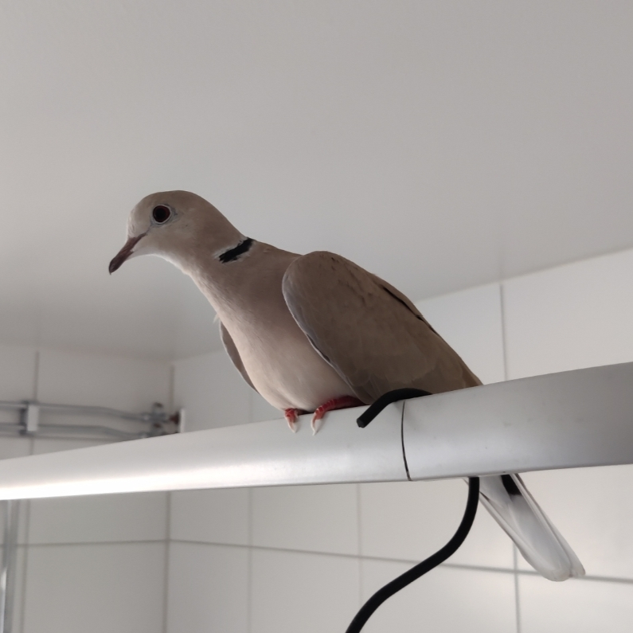
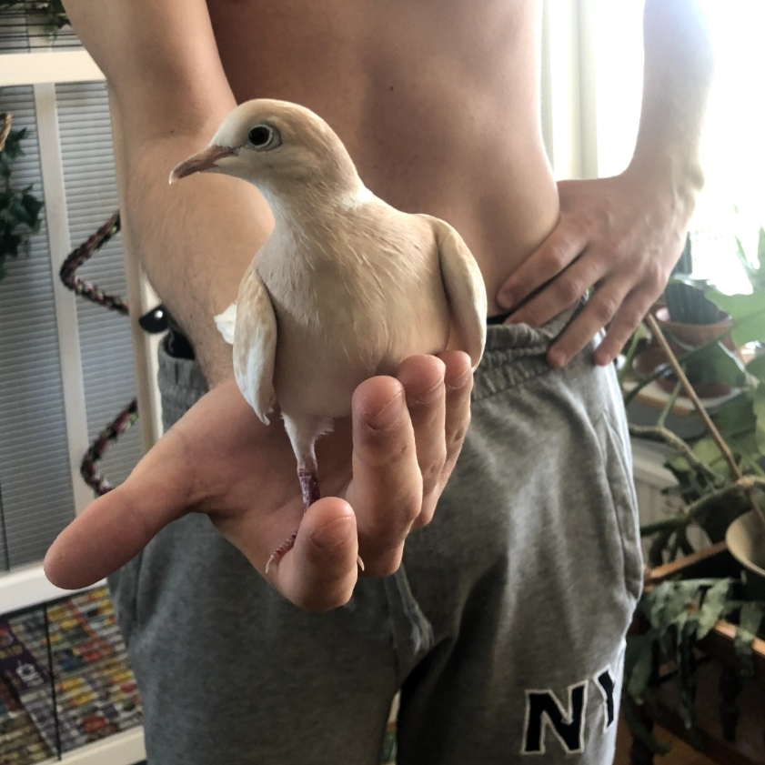
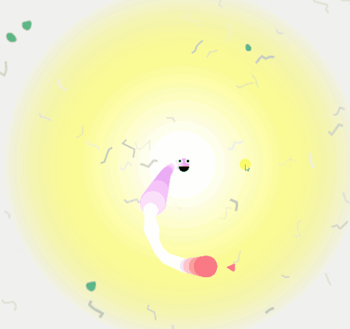

What are you doing?
This is a now page. If you have your own site, you should make one, too!
My life is often busy, and I've been somewhat secretive when sharing details with family and friends. I thought this would be a great way to keep everyone updated on what I'm currently doing. I'll do my best to keep this page updated with any new happenings. Thank you, Phillip Ridlen, for inspiring me with your now page!
This was what I was doing as of October 27 2024
This was what I was doing as of September 27 2024
This is what I am doing now
Life 🌟


I'm still living in the same apartment but I've started searching for a place in the heart of Linköping. My hope is to move closer to the city center around the time I graduate in January. Until then I'll continue sharing my current apartment with my roommate and my lovely ring-necked doves.
Last month I felt a bit uncertain about where my life was headed. But now, things have become much clearer. After graduation, I plan to stay in Linköping and shift my focus towards my career.
Education 🎓
I'm approaching the halfway point of my Master's thesis work at Opera. The tooling I've been developing is technically "complete", though there's still a good amount of polishing needed in terms of styling and functionality before I'm fully satisfied with it.
For the first time, I decided to drop a course — partly because I didn't really need it, but mostly due to having too much on my plate lately. The course had been stressing me out, and I'm hoping that letting it go will allow me to perform better in my other commitments.
Work 💼
I'm likely, and hopefully, going to start working as a Kotlin Android developer at Opera in early January. I've already had meetings with them, and they'll be presenting an offer soon. I'm really excited about the opportunity!
Organizations 🏢
My ethical hacking organization is currently planning our first event — a kickoff lecture where we'll introduce the organization, explain what ethical hacking is, and wrap up with a live demonstration of common real-world attacks. The event will take place during lunch on November 4th. We're also partnering with Enlightsec, who will join us to share a bit about their work as we collaborate on our CTF event scheduled for March 2025.
As Editor-in-Chief of LiTHanian, we're hard at work preparing the next issue, which will land in mailboxes on December 13th. All articles have been written, and most of the illustrations are complete. Now, it's mostly down to the layout. We've already brainstormed some ideas for the following issue. We also had a Christmas-themed photoshoot with the editorial team, which was very cozy!
Expert Progress 📈
The concept of reaching 10,000 hours to become a professional or an expert in a field is derived from Malcolm Gladwell's book "Outliers: The Story of Success" Gladwell popularized the idea that achieving a high level of proficiency in any field typically requires about 10,000 hours of dedicated practice. This notion is based on the research of psychologist Anders Ericsson, who studied the practice habits of elite performers in various domains.
I've been tracking my programming time since 2019, so these numbers are based on that data. The actual total is likely higher, considering I wrote my first program in 2012! Please note that I include this jokingly; I don't necessarily believe in the idea of becoming an expert after 10,000 hours. I haven't given it much thought, and I certainly don't feel like an expert yet.
Hobby Projects ⚙️
For me, having hobbies outside of studying and working is very important. My main hobbies are programming, photography, music, and writing.

I've more or less completed the Digital Bullet Point Journal, at least to the point where there's a working prototype. While I'm not ready to abandon the project, I've decided to put it on hold for now. In addition to this, my old best friend and I teamed up for a Game Jam called Ludum Dare, which was a lot of fun. We used to participate regularly from 2016 to 2019, so this felt like a reunion of sorts. I'll attach a GIF and a link to the project as well!
I've also started a larger initiative, which I'm calling "LiTHe Historia", it's a historical project focused on my university. Next year marks its 50th anniversary as a university, so I'm aiming to complete the project by then. It's a lot of work, though — I've already spent quite a bit of time digging through archives in Linköping, reading old articles and books.
I've made significant progress on my poetry collection since last time, organizing it into chapters and writing introductory paragraphs for each one. I'm also working with an illustrator who will create 10 illustrations for the book. I'll share those next month.